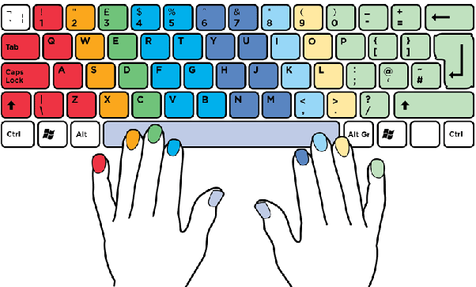

Starting Finger Placement
Put all your fingers on the home row, the one containing the Caps Lock key. There are small bumps on the keys ‘F’ and ‘J’, put your index fingers on the bumps. Each finger is responsible on its own set of keys, as explained on the next illustration.

Finger wise key
Top Row
Initially you should practice top row which include keys -
Middle Row
After mastering top row you should practice for middle row which include keys -
Bottom Row
After mastering middle row you should practice for bottom row which include keys -
Practice
After mastering all three row you should practice for random words and keys.